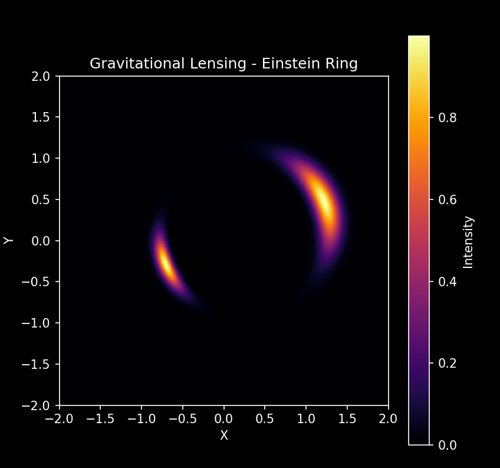

Purpose
Demonstrate strong gravitational lensing: the bending of light around a massive foreground object, producing multiple images and Einstein rings of a background galaxy.
Background
According to General Relativity, a mass curves spacetime, bending light rays from background objects. For perfect alignment, a circular Einstein ring forms. Off-center sources produce multiple images.
Methodology
- Create 2D grid representing source plane.
- Define a Gaussian background galaxy.
- Calculate deflection angles from a point mass lens.
- Compute lensed coordinates: X_lensed = X - alpha_x, Y_lensed = Y - alpha_y
- Map background intensity to lensed coordinates and plot.
Pseudocode
Define 2D grid X, Y
Define background galaxy intensity
Compute deflection angles due to lens mass
Map grid points to lensed positions
Compute intensity at lensed positions
Display image with imshow
Python Simulation Code
import numpy as np
import matplotlib.pyplot as plt
plt.style.use("dark_background")
nx, ny = 500, 500
x = np.linspace(-2, 2, nx)
y = np.linspace(-2, 2, ny)
X, Y = np.meshgrid(x, y)
def galaxy(X, Y):
"""Gaussian galaxy at center of source plane"""
return np.exp(-((X-0.5)**2 + (Y-0.2)**2)/0.05)
source = galaxy(X, Y)
M = 1.0 # lens mass (arbitrary units)
eps = 1e-4 # softening to avoid singularity at center
# Compute deflection angles for point mass lens
deflection_x = M * (X) / (X**2 + Y**2 + eps)
deflection_y = M * (Y) / (X**2 + Y**2 + eps)
X_lensed = X - deflection_x
Y_lensed = Y - deflection_y
lensed_image = galaxy(X_lensed, Y_lensed)
fig, ax = plt.subplots(figsize=(6,6))
im = ax.imshow(lensed_image, extent=(-2,2,-2,2), origin='lower', cmap='inferno')
ax.set_title("Gravitational Lensing - Einstein Ring")
ax.set_xlabel("X")
ax.set_ylabel("Y")
plt.colorbar(im, ax=ax, label="Intensity")
plt.show()
Explanation
- Background galaxy is a Gaussian light source.
- Foreground mass deflects light rays inversely proportional to distance squared.
- Lensed image shows multiple bright spots; perfect alignment creates a circular Einstein ring.
- The code maps source intensity to new coordinates after deflection.
Expected Output
Image showing Einstein ring or arcs depending on source position. Brighter intensity regions show lensed images of the background galaxy.
